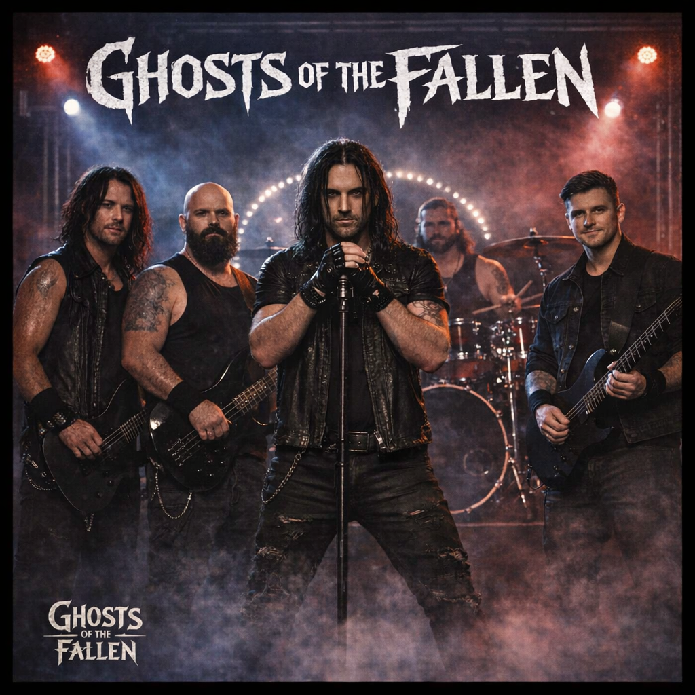

Metal | Celtic / Atmospheric Metal
Ghosts of the Fallen
The Ghost of 17
Ghosts of the Fallen is a five-piece metal band from Elmont, New York, built around versatility, power and a commercial metal sound. Heavy when it needs to be and accessible when the song calls for it, the band moves across different sides of metal without being locked into one style.
Open on Spotify